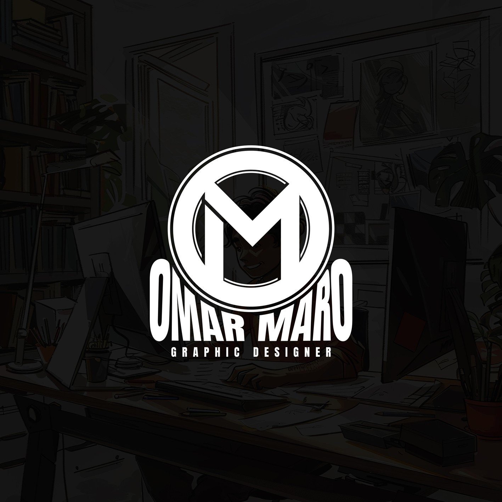

01
تصميمات
السوشيال ميديا
بوستات وإعلانات وحملات لها شكل ثابت، ورسالة واضحة، وحضور بيشد الانتباه.
SOCIAL MEDIA DESIGN ↗✳ OMAR MARO / PORTFOLIO 2026
هو فكرة، وشخصية، وتفاصيل بتخلي الناس تفتكر شغلك. أنا عمر مارو، وبحوّل الأفكار لتصميمات مختلفة تستاهل تتشاف.

01 / SELECTED WORK
كل مشروع عنده حكاية وطريقة عرض تناسبه. هنا بتشوف الفكرة، والنتيجة، والتفاصيل اللي صنعت الفرق.
كل الأعمال على Behance ↗مش كل تصميم
لازم يشبه اللي قبله.
02 / WHAT I DO
تصميمات بتجمع بين الفكرة القوية والتنفيذ الدقيق، حسب احتياج كل مشروع.
بوستات وإعلانات وحملات لها شكل ثابت، ورسالة واضحة، وحضور بيشد الانتباه.
SOCIAL MEDIA DESIGN ↗غلاف يعبر عن محتوى الكتاب، ويوصل إحساسه من أول نظرة.
BOOK COVER DESIGN ↗تصميمات مطبوعة مدروسة، من الهوية البسيطة لأصغر تفصيلة.
BUSINESS CARDS & PRINT ↗أفكار ومشاهد إبداعية، بتوظّف أدوات الذكاء الاصطناعي لخدمة الاتجاه الفني.
AI CREATIVE VISUALS ↗ OM / CREATIVE STUDIO
OM / CREATIVE STUDIO03 / BEHIND THE DESIGNS
مصمم جرافيك مؤمن إن الفكرة القوية لازم يكون ليها تنفيذ بصري يليق بيها. بحب أجرّب اتجاهات متنوعة، وأتعلم أدوات جديدة، وأخلي لكل مشروع روحه الخاصة.
من أول الاسكتش لآخر تعديل، التفاصيل مهمة. وهدفي دايمًا تصميم مش بس شكله حلو، لكن بيخدم الفكرة وبيعيش في الذاكرة.
اكتشف أعمالي على Behance ↗04 / LET'S CREATE SOMETHING
احكيلي عن مشروعك، ونبدأ سوا نطلع له حاجة مختلفة.
تواصل واتساب ↗أو ابعت تفاصيل مشروعك من النموذج.